Floral traits - Ipomopsis temperature experiments
Carrie Wu, John Powers, David Hopp, Diane Campbell
2023-12-01
figs <- read_tsv("fig_paths.tsv")
walk2(figs$path, figs$fig, ~system(paste0("cp ", .x, " ./figures/Figure", .y, ".",tools::file_ext(.x))))
walk2(figs$path, figs$fig, ~system(paste0("inkscape -o ./figures/Figure", .y, ".eps ", .x)))Site Map
SiteMap
# Load in all the Ipomopsis temperature experiment data
# Includes census, phenology, floral and leaf traits, and seeds
# census -------------------------------------------------------------------
census.maxf <- read_csv("data/2021 Maxfield Rosettes - 2021OTCs.csv") %>%
mutate(across(c(plant, plot), as.character),
temp=fct_relevel(fct_recode(temp,"warmed"="OTC"),"control"), site="Maxfield")
#TODO look at survival and flowering from 2021 to 2022 (2021 Maxfield Rosettes - 2021.csv)
# floral traits --------------------------------------------------------------
morph <- bind_rows(GNA=read_csv("data/traits/GNA floral traits - 2021.csv", na="."),
SC=read_csv("data/traits/Spring Creek floral traits - 2021.csv", na="."), .id="site") %>%
rename(plantid = plant, temp = location, plotid=OTC) %>% drop_na(temp) %>%
mutate(temp=fct_relevel(fct_recode(temp,"warmed"="in", "control"="out"),"control")) %>%
bind_rows(read_csv("data/traits/2021 Maxfield Floral Traits - Morphology21.csv") %>%
mutate(plant = as.character(plant), site="Maxfield") %>%
left_join(census.maxf) %>% drop_na(plot)) %>%
mutate(species = if_else(site=="SC", "ten", "agg"), year=year(date))
nectar <- read_csv("data/traits/2021 Maxfield Floral Traits - Nectar21.csv") %>%
mutate(across(c(plant), as.character)) %>%
left_join(census.maxf) %>%
mutate(nectar_volume=nectar_48_h_mm*5/32,
nectar_sugar=nectar_volume*nectar_conc,
plantid=paste0(plotid,plant),
site="Maxfield", species="agg", year=year(date))
flrcol.raw <- read_csv("data/traits/2021 Maxfield Flower Color - 2021.csv", name_repair="minimal") %>% as.data.frame()
wl <- flrcol.raw[,1] #350:1000
flrcol.raw <- flrcol.raw[,seq(2,length(flrcol.raw),2)]
flrcol.long <- cbind(wl,stack(flrcol.raw)) %>%
mutate(red=wl>=626&wl<=700, #sum red and green regions to calculate redness index
green=wl>=476&wl<=550,
total=wl>=401&wl<=750,
color=ifelse(red,"red",ifelse(green,"green",NA)))
flrcol.total <- flrcol.long %>% group_by(color,total,ind) %>% summarize(values=sum(values))
flrcol <- pivot_wider(flrcol.total,names_from=c("color","total"),values_from="values") %>%
mutate(total = green_TRUE+red_TRUE+NA_TRUE,
redness = (red_TRUE-green_TRUE)/total,
ind = str_replace(ind,fixed("."),"_")) %>%
separate(ind, into=c("plantid","rep"), sep="_", fill="right", remove=F) %>%
mutate(rep=as.integer(replace_na(rep, "0"))+1) %>%
left_join(census.maxf) %>% mutate(site="Maxfield", species="agg")
# phenology ---------------------------------------------------------------
phen.raw <- read_csv("data/traits/2021 Maxfield Phenology - 2021.csv")%>%
mutate(plot = as.character(plot),
plotid = paste0(plot, subplot),
plantid = paste0(plotid, plant),
plant = as.character(plant),
julian = yday(date),
year="2021",
height_cm=as.integer(as.character(height_cm)),
open = rowSums(select(., starts_with("open")), na.rm=T),
buds = rowSums(select(., starts_with("buds")), na.rm=T),
eggs = rowSums(select(., starts_with("eggs")), na.rm=T),
eggs_per_flower = replace_na(eggs,0)/(open+buds)) %>%
left_join(census.maxf) %>%
mutate_if(is.character, as.factor)
#some plants were measured late, merge with the earlier date
phen <- phen.raw %>% mutate(date=ymd(recode(as.character(date),
"2021-07-02"="2021-06-30", "2021-07-26"="2021-07-20")),
julian=yday(date)) %>%
complete(nesting(plantid, plotid, plot, subplot, snow, temp),nesting(julian, date), fill=list(open=0,buds=0)) %>% #add zeros to weeks the plant was not counted
mutate(flowering = open + buds > 0,
has_egg = eggs > 0,
site="Maxfield", species="agg", year=year(date))
# seeds -------------------------------------------------------------------
counts_19_20 <- c("seeds","fruits","fruits_split","aborts","fruits_fly_no_seeds","fruits_fly_with_seeds","seeds_fly","fruits_caterpillar","fruits_early_uncountable","flowers_buds","flowers_buds_collected_early","flowers_buds_collected_last")
sds21.date <- read_csv("data/traits/2021 Maxfield Seeds - 2021.csv", skip=1) %>%
mutate(plot = as.character(plot),
plotid = paste0(plot, subplot),
plantid = paste0(plotid, plant),
plant = as.character(plant),
julian = factor(yday(date)),
year = year(date), plantid = paste0(plotid,plant),
species="agg", site="Maxfield") %>%
mutate(flowers_buds_collected_last = ifelse(yday(date) >= 235, flowers_buds, 0), #8/23
flowers_buds_collected_early = ifelse(yday(date) < 235, flowers_buds, 0)) %>%
mutate(across(all_of(counts_19_20), replace_na, 0)) %>%
left_join(census.maxf) %>% drop_na(temp) %>% #8 plants with no census record (also not in traits)
mutate_if(is.character, as.factor)
sds21 <- sds21.date %>%
group_by(across(c("plant", "plantid", colnames(census.maxf)))) %>%
summarize(across(all_of(counts_19_20), sum, na.rm=T), dates=n(), .groups="drop")
sds21.date.zeroed <- sds21.date %>%
filter(date %in% (sds21.date %>% drop_na(date) %>% count(date) %>% filter(n>2) %>% pull(date))) %>%
complete(nesting(plantid, plotid, plot, subplot, snow, temp), nesting(julian, date), fill=list(seeds=0, fruits=0, fruits_split=0, fruits_fly_no_seeds=0, fruits_fly_with_seeds=0, seeds_fly=0, fruits_caterpillar=0)) %>%
mutate(julian=as.integer(as.character(julian)),
seeds_per_fruit = seeds/fruits,
fruits_with_seeds = fruits + fruits_split + fruits_fly_with_seeds,
fruits_nonaborted = fruits_with_seeds + fruits_fly_no_seeds + fruits_caterpillar + fruits_split,
prop_infested = (fruits_fly_no_seeds + fruits_fly_with_seeds + fruits_caterpillar) / fruits_nonaborted,
fruiting = fruits_nonaborted > 0)
sds <- sds21 %>%
mutate(#flowers_volatiles = replace_na(flowers_volatiles, 0), #TODO get volatiles for 2018 & 2019
#TODO get all these counts
#flowers_destroyed = flowers_morphology_nectar + flowers_volatiles + flowers_color,
seeds_per_fruit = seeds / fruits,
fruits_aborted = aborts + flowers_buds_collected_last,
seeds_est = seeds + seeds_fly + (flowers_buds_collected_early + #flowers_destroyed +
fruits_early_uncountable) * (seeds/(fruits + fruits_aborted + fruits_fly_with_seeds + fruits_fly_no_seeds + fruits_caterpillar)) + fruits_split * seeds_per_fruit,
fruits_with_seeds = fruits + fruits_split + fruits_fly_with_seeds,
fruits_nonaborted = fruits_with_seeds + fruits_fly_no_seeds + fruits_caterpillar + fruits_split,
flowers_est = fruits_nonaborted + aborts + flowers_buds, #+ flowers_destroyed,# aborts used to be fruits_aborted, which includes flowers_buds_collected_last, but these are already in flowers_buds
prop_infested = (fruits_fly_no_seeds + fruits_fly_with_seeds + fruits_caterpillar) / fruits_nonaborted,
prop_aborted = fruits_aborted / (fruits_nonaborted + fruits_aborted),
prop_nonaborted = fruits_nonaborted / (fruits_nonaborted + fruits_aborted),
seeds_per_flower = seeds_est / flowers_est) %>%
filter(flowers_est > 0)#one plant "gone"
write.csv(sds, "data/2021_Maxfield_sds.csv")
# volatiles ---------------------------------------------------------------
vt <- read_csv("data/volatiles/CWu_meta21.csv") %>%
rename(date=Date, site=Site, VWC=SoilVWC, notes=Notes) %>%
mutate(year=year(date)) %>% filter(Expt=="otc", temp !="air", site != "bb")
svfl <- read_csv("data/volatiles/svf_svl.csv") %>% #final filtering for stats, both flowers and leaves
rename(site=Site, VWC=SoilVWC, plantid=PlantID, species=PlantType, total_vols=TotalVols) %>%
mutate(plantid = paste(species, plantid)) %>%
mutate(year=factor(year(date))) %>% filter(Expt=="otc", temp !="air", site != "bb")
# soilmoisture ---------------------------------------------------------------
sm <- bind_rows(general=bind_rows(read_csv("data/2019 & 2021 SC & GNA Soil Moisture - general.csv"),
read_csv("data/2021 Maxfield Soil Moisture - 2021.csv") %>%
filter(date!=ymd("2021-06-23")) %>% #no OTCs at Maxfield yet
mutate(temp = ifelse(location %in% c("OTCV","OTCO") | !is.na(OTC),"warmed", "control"),
site="Maxfield")),
atplant=bind_rows(read_csv("data/2021 Maxfield Leaf Traits - 2021round1.csv") %>%
select(date=date_collected, plot, subplot, plant, temp, VWC, period=per_us) %>%
mutate(temp = ifelse(temp=="OTC", "warmed", "control"), site="Maxfield", plant=as.character(plant)),
vt %>% select(site, date, temp, chamber, plotid, plant, VWC, notes)), .id="type") %>%
mutate(year=year(date)) %>% filter(date!=ymd("2019-08-05")) #only one warmed VWC at GNA that day
# OTCs ---------------------------------------------------------------
otc_duration <- read_csv("./data/CWu OTC Hobos - duration.csv")
# meltdates ---------------------------------------------------------------
# 2021 Maxfield HOBO threshold=10,000 lux
# normal: plots
# 1 = 21-04-30
# 3 = 21-04-30
# 6 = 21-05-02
# early plots
# 2 = 21-04-14
# 4 = 21-04-14
# 5 = 21-04-12
meltdates <- tibble::tribble( ~year, ~sun_date, # average light level melt day in normal snowmelt plots (1,3,6) at Maxfield
2018, 119, # from Maxfield Results - timings sheet
2019, 158, # threshold = 10,000 lux
2021, 121) %>% # Manually from lab drive: 2021 Maxfield Hobo overwinter
mutate(site="Maxfield")
# names --------------------------------------------------------------
spnames <- c(agg="I. aggregata", ten="I. tenuituba")
sitenames <- c(GNA="Gothic Natural Area",Maxfield="Maxfield Meadow",SC="Spring Creek")
speciessitenames <- c(GNA="I. aggregata\nGothic Natural Area",Maxfield="I. aggregata\nMaxfield Meadow",
SC="I. tenuituba\nSpring Creek")
year_pal <- setNames(brewer.pal(3, name="Set2")[c(2,3,1)], meltdates$year)
traits <- c("corolla_length", "corolla_width",
"nectar_volume", "nectar_conc",
"height_cm","redness",
"open","seeds_per_fruit", "seeds_est", "fruits_nonaborted", "flowers_est",
"prop_infested", "prop_aborted", "seeds_per_flower")
floraltraits <- traits[1:6]
seedtraits <- traits[7:14]
traitnames.units <- set_names(c(
"Corolla length (mm)", "Corolla width (mm)",
"Nectar production\n(\U00B5L/day)", "Nectar conc.\n(% by mass)",
"Inflorescence height\n(cm)", "Redness index",
"Open flowers", "Seeds per fruit", "Estimated total\nseeds", "Nonaborted fruits", "Flower number",
"Prop. nonaborted\nfruits infested","Prop. fruits\naborted","Estimated seeds\nper flower"), traits)
traitnames <- set_names(c(
"Corolla length", "Corolla width",
"Nectar production", "Nectar conc.",
"Inflorescence height", "Redness index",
"Open flowers", "Seeds per fruit", "Estimated total seeds", "Nonaborted fruits", "Flower number",
"Prop. nonaborted fruits infested","Prop. fruits aborted","Estimated seeds per flower"), traits)Sample sizes
Timings
timings <- bind_rows(
meltdates=meltdates %>% rename(begin=sun_date) %>% mutate(end=begin),
otc = otc_duration %>% mutate(begin=yday(OTC_start), end=yday(OTC_end)),
hobo = otc_duration %>% mutate(begin=yday(logger_start), end=yday(logger_end)),
sm = sm %>% filter(type=="general") %>% group_by(site, year) %>% summarize(begin = min(yday(date)), end = max(yday(date))),
vt = vt %>% filter(Tissue=="flower", !is.na(site)) %>% group_by(site, year) %>%
summarize(begin = min(yday(date)), end = max(yday(date))),
vt.leaf = vt %>% filter(Tissue=="leaf", !is.na(site), year=="2019") %>%
group_by(site, year) %>% summarize(begin = min(yday(date)), end = max(yday(date))),
mt = morph %>% drop_na(corolla_length) %>% group_by(site, year) %>%
summarize(begin = min(yday(date), na.rm=T), end = max(yday(date), na.rm=T)),
nt = nectar %>% group_by(site, year) %>% summarize(begin = min(yday(date), na.rm=T), end = max(yday(date), na.rm=T)),
flrcol = data.frame(year=2021, site="Maxfield", begin=yday(ymd("2021-07-14")), end=yday(ymd("2021-07-26"))),
ph = phen %>% drop_na(height_cm) %>% group_by(site, year) %>% summarize(begin = min(yday(date)), end = max(yday(date))),
sds = sds21.date %>% group_by(site, year) %>% summarize(begin = min(yday(date), na.rm=T), end = max(yday(date), na.rm=T)),
.id="variable") %>% ungroup %>% select(variable, year, site, begin, end)
timings_labels <- c(meltdates="Snowmelt", otc="Open top chambers", hobo="Loggers",
vt="Floral volatiles", vt.leaf="Leaf volatiles",
sm="General soil moisture", ph="Height, flowers, fly eggs",
mt="Floral morphology", nt="Nectar",
sds="Seeds", flrcol="Flower color")
timings.otc <- timings %>% left_join(select(otc_duration, year, site, OTC_start)) %>%
mutate(begin=begin-yday(OTC_start), end=end-yday(OTC_start))
timings.otc %>% mutate(range=paste(begin, end=end, sep=" : "), .keep="unused") %>% select(-OTC_start) %>%
pivot_wider(names_from=year, values_from=range, names_sort=T) %>%
mutate(variable=recode(variable, !!!timings_labels)) %>% arrange(site) %>% kable(caption="Days after OTCs deployed")| variable | site | 2018 | 2019 | 2021 |
|---|---|---|---|---|
| Open top chambers | GNA | 0 : 29 | 0 : 27 | 0 : 33 |
| Loggers | GNA | 5 : 29 | 0 : 27 | 0 : 33 |
| General soil moisture | GNA | NA | 0 : 14 | 0 : 0 |
| Floral volatiles | GNA | 20 : 21 | 22 : 27 | 15 : 29 |
| Leaf volatiles | GNA | NA | 27 : 27 | NA |
| Floral morphology | GNA | NA | NA | 7 : 7 |
| Snowmelt | Maxfield | NA : NA | NA : NA | -55 : -55 |
| Open top chambers | Maxfield | NA | NA | 0 : 54 |
| Loggers | Maxfield | NA | NA | 3 : 39 |
| General soil moisture | Maxfield | NA | NA | 5 : 25 |
| Floral volatiles | Maxfield | NA | NA | 13 : 31 |
| Floral morphology | Maxfield | NA | NA | 7 : 31 |
| Nectar | Maxfield | NA | NA | 12 : 19 |
| Flower color | Maxfield | NA | NA | 19 : 31 |
| Height, flowers, fly eggs | Maxfield | NA | NA | -2 : 39 |
| Seeds | Maxfield | NA | NA | 31 : 63 |
| Open top chambers | SC | NA | 0 : 27 | 0 : 34 |
| Loggers | SC | NA | 3 : 27 | 0 : 34 |
| General soil moisture | SC | NA | 8 : 13 | 0 : 0 |
| Floral volatiles | SC | NA | 23 : 23 | 14 : 29 |
| Leaf volatiles | SC | NA | 23 : 23 | NA |
| Floral morphology | SC | NA | NA | 7 : 7 |
| Open top chambers | bb | 0 : 28 | NA | NA |
| Loggers | bb | 4 : 28 | NA | NA |
dodging <- position_dodge2(width=1, reverse = T, preserve="single")
shading <- data.frame(ystart=0:6+0.5, yend=1:7+0.5, col=letters[c(1,2,1,2,1,2,1)])
timings.otc %>% filter(site!="bb", !variable %in% c("meltdates","hobo","otc")) %>% #sds
mutate(variable=fct_reorder(variable, begin, na.rm=T) %>%
fct_relevel(c("vt","vt.leaf","mt","nt","flrcol","ph")) %>% fct_rev(),
year=factor(year)) %>%
ggplot(aes(y=variable, color=year, shape=site))+
geom_rect(data=shading, aes(ymin=ystart, ymax=yend, xmin=-Inf, xmax=Inf, fill=col), inherit.aes = F, alpha=0.05)+
scale_fill_grey(start=0, end=1, guide="none")+
geom_linerange(aes(xmin=begin, xmax=end),
position = dodging, size=1, show.legend=FALSE) +
geom_point(aes(x=begin), position = dodging, size=2)+
geom_point(aes(x=end), position = dodging, size=2) +
scale_y_discrete(labels=timings_labels, expand=expansion(mult=c(0,0.08)))+
labs(color="Year", shape="Site", x="Days after OTCs deployed")+ scale_color_manual(values=year_pal)+
theme_bw() + theme(panel.grid.major.y=element_blank(), axis.title.y=element_blank(), axis.text=element_text(color="black"))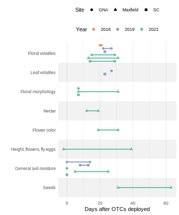
Measurements per plant
morph %>% drop_na(corolla_length) %>% count(site, plantid, name="n_per_plant") %>% count(site, n_per_plant) %>%
kable(caption="corolla_length")| site | n_per_plant | n |
|---|---|---|
| GNA | 1 | 3 |
| GNA | 2 | 63 |
| GNA | 4 | 1 |
| Maxfield | 1 | 3 |
| Maxfield | 2 | 18 |
| Maxfield | 3 | 13 |
| Maxfield | 4 | 13 |
| Maxfield | 5 | 12 |
| SC | 2 | 31 |
morph %>% drop_na(corolla_width) %>% count(site, plantid, name="n_per_plant") %>% count(site, n_per_plant) %>%
kable(caption="corolla_width")| site | n_per_plant | n |
|---|---|---|
| GNA | 1 | 3 |
| GNA | 2 | 63 |
| GNA | 4 | 1 |
| Maxfield | 1 | 26 |
| Maxfield | 2 | 27 |
| SC | 2 | 31 |
nectar %>% drop_na(nectar_volume) %>% count(site, plantid, name="n_per_plant") %>% count(site, n_per_plant) %>%
kable(caption="nectar_volume")| site | n_per_plant | n |
|---|---|---|
| Maxfield | 1 | 28 |
| Maxfield | 2 | 22 |
| Maxfield | 3 | 1 |
phen %>% drop_na(height_cm) %>% count(site, plantid, name="n_per_plant") %>% count(site, n_per_plant) %>%
kable(caption="height_cm")| site | n_per_plant | n |
|---|---|---|
| Maxfield | 1 | 14 |
| Maxfield | 2 | 2 |
| Maxfield | 3 | 5 |
| Maxfield | 4 | 27 |
| Maxfield | 5 | 17 |
| Maxfield | 6 | 11 |
flrcol %>% drop_na(redness) %>% count(site, plantid, name="n_per_plant") %>% count(site, n_per_plant) %>%
kable(caption="redness")| site | n_per_plant | n |
|---|---|---|
| Maxfield | 1 | 26 |
| Maxfield | 2 | 20 |
Number of plants
morph %>% drop_na(corolla_length) %>% count(site, temp, plantid) %>% count(site, temp) %>% kable(caption="corolla_length")| site | temp | n |
|---|---|---|
| GNA | control | 26 |
| GNA | warmed | 41 |
| Maxfield | control | 29 |
| Maxfield | warmed | 30 |
| SC | control | 11 |
| SC | warmed | 20 |
morph %>% drop_na(corolla_width) %>% count(site, temp, plantid) %>% count(site, temp) %>% kable(caption="corolla_width")| site | temp | n |
|---|---|---|
| GNA | control | 26 |
| GNA | warmed | 41 |
| Maxfield | control | 28 |
| Maxfield | warmed | 25 |
| SC | control | 11 |
| SC | warmed | 20 |
nectar%>% drop_na(nectar_volume) %>% count(site, temp, plantid) %>% count(site, temp) %>% kable(caption="nectar_volume")| site | temp | n |
|---|---|---|
| Maxfield | control | 26 |
| Maxfield | warmed | 25 |
phen %>% drop_na(height_cm, temp) %>% count(site, temp, plantid) %>% count(site, temp) %>% kable(caption="height_cm")| site | temp | n |
|---|---|---|
| Maxfield | control | 31 |
| Maxfield | warmed | 30 |
flrcol%>% drop_na(redness, temp) %>% count(site, temp, plantid) %>% count(site, temp) %>% kable(caption="redness")| site | temp | n |
|---|---|---|
| Maxfield | control | 20 |
| Maxfield | warmed | 26 |
sds %>% drop_na(seeds, temp) %>% count(site, temp, plantid) %>% count(site, temp) %>% kable(caption="seeds")| site | temp | n |
|---|---|---|
| Maxfield | control | 31 |
| Maxfield | warmed | 31 |
#Average data by plant
morph.mean <- morph %>% drop_na(corolla_length) %>%
group_by(species, site, temp, snow, plotid, plantid) %>%
summarize(across(c(corolla_length, corolla_width), mean, na.rm=T), n = n())
nectar.mean <- nectar %>% drop_na(nectar_volume) %>%
group_by(species, site, temp, snow, plotid, plantid) %>%
summarize(across(c(nectar_volume, nectar_conc, nectar_sugar), mean, na.rm=T), n = n())
phen.max <- phen %>% drop_na(height_cm, temp) %>% filter(date!="2021-06-23") %>% #before OTCs
group_by(species, site, temp, snow, plotid, plantid) %>%
summarize(height_cm=max(height_cm, na.rm=T)) #use the maximum plant height instead of the mean across the year (deer browsing)
flrcol.mean <- flrcol %>% drop_na(redness, temp) %>%
group_by(species, site, temp, snow, plotid, plantid) %>%
summarize(redness=mean(redness, na.rm=T))
all.mean <- morph.mean %>% rename(n.morph=n) %>%
full_join(rename(nectar.mean, n.nectar=n)) %>% full_join(phen.max) %>% full_join(flrcol.mean) %>% full_join(sds) %>% ungroup()
traits.sd <- map_dbl(traits, ~sd(all.mean[[.x]], na.rm=T)) %>% set_names(traits)
all.mean %>% count(site, temp, plotid, plantid) %>% count(site, temp, plotid) %>%
ggplot(aes(x=n, fill=temp)) + facet_grid(site~temp) + geom_histogram(binwidth=1) +
theme_bw() + scale_fill_brewer(palette="Set1", direction=-1, guide="none") +
labs(x="Number of OTCs",y="Number of morphology plants")Soil moisture
ggplot(sm, aes(x=factor(date), y=VWC, color=temp)) +
facet_wrap(vars(type, site), scales="free_x", labeller = as_labeller(c(atplant="Next to plant", general="General", sitenames)))+
geom_boxplot(outlier.size = 0.5)+
theme_minimal() + theme(axis.text.x=element_text(angle=90, hjust=0), legend.position="top",
axis.title.x = element_blank()) +
scale_color_brewer(palette = "Set1", direction=-1)+
labs(y="Soil Volumetric Water Content (%)", x="", color="Temperature")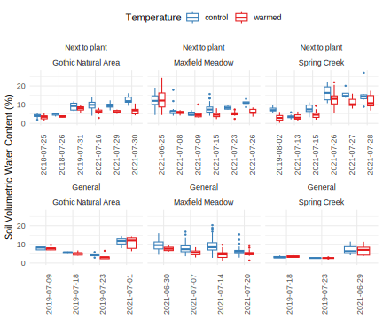
sm.mean.long <- sm %>% group_by(type, year, site, date, temp) %>% drop_na(VWC) %>%
summarize(SE=sd(VWC, na.rm=T)/sqrt(length(VWC)), VWC=mean(VWC, na.rm=T), n=n(), .groups="drop") %>%
left_join(select(otc_duration, year, site, OTC_start)) %>%
mutate(days_since_OTC = date-OTC_start)
ggplot(sm.mean.long, aes(x=days_since_OTC, y=VWC, shape=type, color=temp)) +
facet_wrap(vars(year, site), labeller=as_labeller(c(set_names(unique(sm.mean.long$year)), sitenames)))+
geom_point(size=2) + geom_linerange(aes(ymin=VWC-SE, ymax=VWC+SE))+ geom_line(aes(group=temp))+
theme_minimal() + scale_color_brewer("Temperature", palette = "Set1", direction=-1) +
scale_shape_manual("Location", values=c(19, 1), labels=c("next to plant", "general"))+
labs(x="Days since OTC deployment", y="Soil volumetric water content (%)")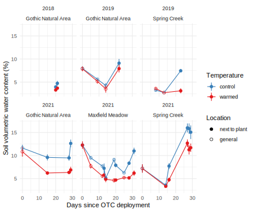
sm.mean <- sm.mean.long %>% select(-n) %>% pivot_wider(names_from=temp, values_from=c(VWC, SE)) %>%
mutate(VWC_diff = VWC_warmed-VWC_control) %>%
filter(days_since_OTC > 0) # some baseline VWC measurements right when OTCs deployed
print(paste("Mean difference in VWC across dates and sites (mean +-SD):", round(mean(sm.mean$VWC_diff),1),"+-", round(sd(sm.mean$VWC_diff),1)))[1] "Mean difference in VWC across dates and sites (mean +-SD): -2.3 +- 1.7"ggplot(sm.mean, aes(x=VWC_control, y=VWC_warmed, shape=paste(site, type), color=factor(year))) +
#facet_wrap(vars(type, site), labeller = as_labeller(c(atplant="Next to plant", general="General", sitenames)))+
geom_abline(intercept=0, slope=1)+ geom_smooth(aes(group=1), color="black", se=F, span=0.7)+ geom_point(size=3) +
geom_errorbar(aes(ymin=VWC_warmed-SE_warmed, ymax=VWC_warmed+SE_warmed))+
geom_errorbarh(aes(xmin=VWC_control-SE_control, xmax=VWC_control+SE_control))+
coord_fixed(xlim=c(0,17), ylim=c(0,17)) + scale_color_manual("Year", values=year_pal)+
scale_shape_manual("Site, location", values = c(19,1, 17, 2, 15, 0), labels=~str_replace(.x, "atplant","at plant")) +
labs(x="Soil moisture, control (%VWC)", y="Soil moisture, warmed (%VWC)")+
theme_bw() + scale_y_continuous(expand=expansion(mult=c(0,0.05)))+scale_x_continuous(expand=expansion(mult=c(0,0.05)))+
theme(axis.text = element_text(color="black"))Trait correlations
ggplot(morph, aes(shape=site, y=corolla_width, x=corolla_length, color=temp)) +
facet_wrap(vars(species), labeller = as_labeller(spnames)) +
geom_point() + geom_smooth(aes(group=species), color="black") +
labs(x="Corolla length", y="Corolla width", shape="Site", color="Temperature") +
scale_color_brewer(palette="Set1", direction=-1) + theme_bw() +
theme(strip.text=element_text(face="italic"))
ggplot(nectar, aes(y=nectar_conc, x=nectar_volume, color=temp)) +
geom_point() + geom_smooth(color="black") +
labs(x="Nectar volume (uL)", y="Nectar concentration", shape="Site", color="Temperature") +
scale_color_brewer(palette="Set1", direction=-1) + theme_bw() +
theme(strip.text=element_text(face="italic"))
Trait plasticity
morph.mean %>% pivot_longer(c(corolla_length, corolla_width)) %>%
ggplot(aes(x=temp, y=value, color=temp)) + #paste(spnames[species], sitenames[site], sep="\n")
facet_grid(name~site, scales="free_y", labeller = as_labeller(c(traitnames.units, speciessitenames)))+
geom_violin(draw_quantiles=c(0.25, 0.5, 0.75)) +
#geom_signif(comparisons = list(c(1,2)), test="t.test",
# map_signif_level=TRUE, color="black",size=0.4, textsize=3) +
geom_point(position=position_jitterdodge(dodge.width=0.9, jitter.width=0.3), size=1) +
labs(x="", y="", color="Temperature") +
scale_y_continuous(limits=c(0,NA), expand=expansion(mult=c(0,0.05)))+
scale_color_brewer(palette="Set1", direction=-1) + theme_bw() +
theme(legend.position = "top", axis.title.x=element_blank(), axis.text.x=element_blank(),
panel.grid.major.x = element_blank(), axis.ticks.x=element_blank(), axis.text=element_text(color="black"))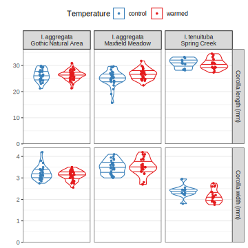
morph %>% pivot_longer(c(corolla_length, corolla_width)) %>% filter(site=="Maxfield") %>%
ggplot(aes(x=temp, y=value, color=temp)) +
facet_grid(name~date, scales="free_y")+
geom_violin(draw_quantiles=c(0.25, 0.5, 0.75)) +
geom_signif(comparisons = list(c(1,2)), test="t.test",
map_signif_level=TRUE, color="black",size=0.4, textsize=3) +
geom_point(position=position_jitterdodge(dodge.width=0.9, jitter.width=0.1), size=1) +
labs(x="", y="", color="Temperature", title="Maxfield floral morphology by date", subtitle="1-2 flowers/plant/date, unaveraged. OTCs deployed 6-25") +
scale_y_continuous(limits=c(0,NA))+
scale_color_brewer(palette="Set1", direction=-1) + theme_minimal() +
theme(legend.position = "top")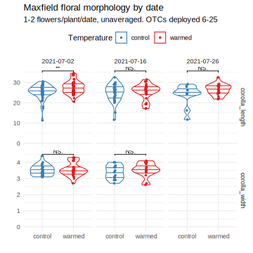
nectar %>% pivot_longer(c(nectar_conc, nectar_volume)) %>% filter(site=="Maxfield") %>%
ggplot(aes(x=temp, y=value, color=temp)) +
facet_grid(name~date, scales="free_y")+
geom_violin(draw_quantiles=c(0.25, 0.5, 0.75)) +
geom_signif(comparisons = list(c(1,2)), test="t.test",
map_signif_level=TRUE, color="black",size=0.4, textsize=3) +
geom_point(position=position_jitterdodge(dodge.width=0.9, jitter.width=0.1), size=1) +
labs(x="", y="", color="Temperature", title="Maxfield nectar by date", subtitle="OTCs deployed 6-25") +
scale_y_continuous(limits=c(0,NA))+
scale_color_brewer(palette="Set1", direction=-1) + theme_minimal() +
theme(legend.position = "top")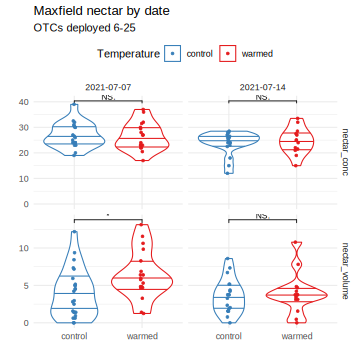
morph.meandate <- morph %>% filter(site=="Maxfield") %>%
group_by(plantid, date, temp) %>% summarize(across(where(is.numeric), mean, na.rm=T)) %>% #mean for each date
pivot_longer(c(corolla_length, corolla_width))
ggplot(morph.meandate, aes(x=date, y=value, color=temp)) +
facet_wrap(vars(name), scales="free_y", labeller=as_labeller(traitnames.units))+
geom_vline(aes(xintercept=otc_duration %>% filter(site=="Maxfield") %>% pull(OTC_start)))+
geom_path(aes(group=plantid), alpha=0.6) + geom_point(size=1) +
geom_path(data=morph.meandate %>% group_by(name, date, temp) %>% summarize(value=mean(value, na.rm=T)), aes(group=temp), size=2)+
labs(x="", y="", color="Temperature", title="Maxfield floral morphology by date", subtitle="1-2 flowers/plant/date, averaged by plant") +
scale_y_continuous(limits=c(0,NA))+ scale_x_date(limits=c(ymd("2021-06-24"), NA))+
scale_color_brewer(palette="Set1", direction=-1) + theme_minimal() +
theme(legend.position = "top")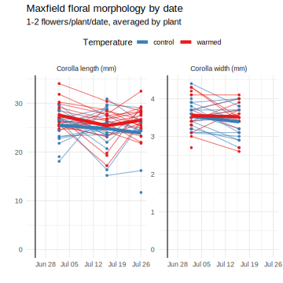
nectar.meandate <- nectar %>% filter(site=="Maxfield") %>%
group_by(plantid, date, temp) %>% summarize(across(where(is.numeric), mean, na.rm=T)) %>% #mean for each date
pivot_longer(c(nectar_conc, nectar_volume))
ggplot(nectar.meandate, aes(x=date, y=value, color=temp)) +
facet_wrap(vars(name), scales="free_y", labeller=as_labeller(traitnames.units))+
geom_vline(aes(xintercept=otc_duration %>% filter(site=="Maxfield") %>% pull(OTC_start)))+
geom_path(aes(group=plantid), alpha=0.6) + geom_point(size=1) +
geom_path(data=nectar.meandate %>% group_by(name, date, temp) %>% summarize(value=mean(value, na.rm=T)), aes(group=temp), size=2)+
labs(x="", y="", color="Temperature", title="Maxfield nectar by date", subtitle="1-2 flowers/plant/date, averaged by plant") +
scale_y_continuous(limits=c(0,NA))+ scale_x_date(limits=c(ymd("2021-06-24"), NA))+
scale_color_brewer(palette="Set1", direction=-1) + theme_minimal() +
theme(legend.position = "top")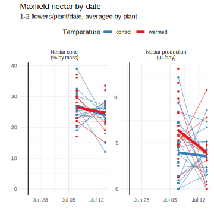
all.mean %>% pivot_longer(any_of(floraltraits[-c(1:2)])) %>%
filter(site=="Maxfield") %>%
drop_na(value) %>%
ggplot(aes(x=temp, y=value, color=temp)) +
facet_wrap(vars(name), scales="free_y", labeller = as_labeller(traitnames.units), nrow=1)+
geom_violin(draw_quantiles=c(0.25, 0.5, 0.75)) +
geom_point(position=position_jitterdodge(dodge.width=0.9, jitter.width=0.1), size=1) +
geom_signif(comparisons = list(c(1,2)), test="t.test",
map_signif_level=TRUE, color="black",size=0.4, textsize=3) +
labs(x="", y="", color="Temperature") +
scale_y_continuous(limits=c(0,NA), expand=expansion(mult=c(0,0.07)))+
scale_color_brewer(palette="Set1", direction=-1) + theme_bw() +
theme(legend.position = "top", axis.title.x=element_blank(), axis.text.x=element_blank(),
panel.grid.major.x = element_blank(), axis.ticks.x=element_blank(), axis.text=element_text(color="black"))
all.mean %>% pivot_longer(any_of(seedtraits)) %>%
filter(site=="Maxfield") %>%
drop_na(value) %>%
ggplot(aes(x=temp, y=value, color=temp)) +
facet_wrap(vars(name), scales="free_y", labeller = as_labeller(traitnames.units), nrow=2)+
geom_violin(draw_quantiles=c(0.25, 0.5, 0.75)) +
geom_point(position=position_jitterdodge(dodge.width=0.9, jitter.width=0.1), size=1) +
geom_signif(comparisons = list(c(1,2)), test="t.test",
map_signif_level=TRUE, color="black",size=0.4, textsize=3) +
labs(x="", y="", color="Temperature") +
scale_y_continuous(limits=c(0,NA), expand=expansion(mult=c(0,0.07)))+
scale_color_brewer(palette="Set1", direction=-1) + theme_bw() +
theme(legend.position = "top", axis.title.x=element_blank(), axis.text.x=element_blank(),
panel.grid.major.x = element_blank(), axis.ticks.x=element_blank(), axis.text=element_text(color="black"))Effect of snowmelt
lmer(corolla_length~temp*snow+(1|plotid)+(1|plantid),data=filter(morph, site=="Maxfield")) %>% anova %>%
kable(caption="corolla_length")| Sum Sq | Mean Sq | NumDF | DenDF | F value | Pr(>F) | |
|---|---|---|---|---|---|---|
| temp | 67.7092273 | 67.7092273 | 1 | 50.23738 | 5.9467016 | 0.0183217 |
| snow | 0.0076964 | 0.0076964 | 1 | 50.23738 | 0.0006760 | 0.9793611 |
| temp:snow | 4.4053643 | 4.4053643 | 1 | 50.23738 | 0.3869101 | 0.5367410 |
lmer(corolla_width ~temp*snow+(1|plotid)+(1|plantid),data=filter(morph, site=="Maxfield")) %>% anova %>%
kable(caption="corolla_width")| Sum Sq | Mean Sq | NumDF | DenDF | F value | Pr(>F) | |
|---|---|---|---|---|---|---|
| temp | 0.0206937 | 0.0206937 | 1 | 47.25554 | 0.2318347 | 0.6323890 |
| snow | 0.1333798 | 0.1333798 | 1 | 47.25554 | 1.4942744 | 0.2276166 |
| temp:snow | 0.0233401 | 0.0233401 | 1 | 47.25554 | 0.2614829 | 0.6114843 |
lmer(nectar_volume ~temp*snow+(1|plotid)+(1|plantid),data=nectar) %>% anova %>%
kable(caption="nectar_volume")| Sum Sq | Mean Sq | NumDF | DenDF | F value | Pr(>F) | |
|---|---|---|---|---|---|---|
| temp | 46.5024108 | 46.5024108 | 1 | 71 | 5.0485987 | 0.0277561 |
| snow | 6.4097818 | 6.4097818 | 1 | 71 | 0.6958868 | 0.4069672 |
| temp:snow | 0.8225343 | 0.8225343 | 1 | 71 | 0.0892996 | 0.7659424 |
lmer(nectar_conc ~temp*snow+(1|plotid)+(1|plantid),data=nectar) %>% anova %>%
kable(caption="nectar_conc")| Sum Sq | Mean Sq | NumDF | DenDF | F value | Pr(>F) | |
|---|---|---|---|---|---|---|
| temp | 7.17312 | 7.17312 | 1 | 64 | 0.2885804 | 0.5929945 |
| snow | 83.58354 | 83.58354 | 1 | 64 | 3.3626330 | 0.0713417 |
| temp:snow | 40.77064 | 40.77064 | 1 | 64 | 1.6402357 | 0.2049150 |
lmer(height_cm ~temp*snow+(1|plotid),data=phen.max) %>% anova %>%
kable(caption="height_cm")| Sum Sq | Mean Sq | NumDF | DenDF | F value | Pr(>F) | |
|---|---|---|---|---|---|---|
| temp | 20.15551 | 20.15551 | 1 | 46.592700 | 0.1764463 | 0.6763760 |
| snow | 28.75377 | 28.75377 | 1 | 5.189353 | 0.2517175 | 0.6364279 |
| temp:snow | 30.74140 | 30.74140 | 1 | 46.592700 | 0.2691177 | 0.6063795 |
lmer(redness ~temp*snow+(1|plotid)+(1|plantid), data=flrcol) %>% anova %>%
kable(caption="redness")| Sum Sq | Mean Sq | NumDF | DenDF | F value | Pr(>F) | |
|---|---|---|---|---|---|---|
| temp | 0.0034027 | 0.0034027 | 1 | 62 | 0.8620574 | 0.3567643 |
| snow | 0.0147175 | 0.0147175 | 1 | 62 | 3.7286085 | 0.0580634 |
| temp:snow | 0.0000153 | 0.0000153 | 1 | 62 | 0.0038819 | 0.9505204 |
Effect of temperature
temp.mod <- tribble(
~trait, ~species, ~model,
"total_vols", "aggD", lmer(total_vols ~temp+site+year+(1|plantid), data=filter(svfl, type=="floral", species=="agg")),
"total_vols", "tenD", lmer(total_vols ~temp+year+(1|plantid), data=filter(svfl, type=="floral", species=="ten", DN=="day")),
"total_vols", "tenN", lmer(total_vols ~temp+year+(1|plantid), data=filter(svfl, type=="floral", species=="ten", DN=="night")),
"total_vols_leaf","leafD", lm(total_vols ~temp+species,
data=mutate(filter(svfl, type=="leaf"), total_vols=total_vols/1000)),#g to mg biomass
"corolla_length", "agg", lmer(corolla_length~temp+site+(1|plantid), data=filter(morph, species=="agg")),
"corolla_length", "ten", lmer(corolla_length~temp+(1|plantid), data=filter(morph, species=="ten")),
"corolla_width", "agg", lmer(corolla_width ~temp+site+(1|plantid), data=filter(morph, species=="agg")),
"corolla_width", "ten", lmer(corolla_width ~temp+(1|plantid), data=filter(morph, species=="ten")),
"nectar_volume", "agg", lmer(nectar_volume ~temp+(1|plantid),data=nectar),
"nectar_conc", "agg", lmer(nectar_conc ~temp+(1|plantid),data=nectar),
"redness", "agg", lmer(redness ~temp+(1|plantid), data=flrcol),
"height_cm", "agg", lm(height_cm ~temp, data=phen.max),
"openbuds", "agg", lmer(I(open+buds) ~temp*date + (1|plantid), data=mutate(filter(phen.raw, date!="2021-06-23"), date=factor(date))),
"eggs_per_flower","agg",lmer(eggs_per_flower~temp*date + (1|plantid), data=mutate(filter(phen.raw, date!="2021-06-23"), date=factor(date)))) %>%
bind_rows(tibble(trait=seedtraits[-1], species="agg") %>%
mutate(model = map(trait, ~lm(formula(paste(.x, "~ temp")), data = sds)))) %>%
mutate(test = map(model, ~tidy(anova(.x))),
emm = map(model, ~tidy(emmeans(.x, ~ temp))),
data = map(model, model.frame),
n_plants = map_int(data, ~nlevels(.x$plantid)),
n_samples = map_int(data, nrow))
temp.mod %>% select(-model,-test,-data) %>% unnest(emm) %>%
pivot_wider(names_from = temp, values_from=c(estimate, std.error), id_cols=c(trait, species)) %>%
mutate(change=(estimate_warmed-estimate_control)/estimate_control) %>%
left_join(temp.mod %>% select(-model,-emm,-data) %>% unnest(test) %>% filter(term!="Residuals")) %>%
select(trait, species, term, NumDF, DenDF, F.value=statistic, p.value, n_plants, n_samples,
estimate_control, std.error_control, estimate_warmed, std.error_warmed, change) %>%
mutate(trait = c(set_names(str_replace(traitnames.units,"\n"," "), names(traitnames.units)),
total_vols="Total volatile emissions (ng/flower/hr)",
total_vols_leaf = "Total volatile emissions (ng/mg/hr)",
openbuds = "Open flowers and elongated buds",
eggs_per_flower = "Eggs per flower")[trait],
species = c(spnames, aggD="I. aggregata day",
tenD="I. tenuituba day", tenN = "I. tenuituba night", leafD="Leaves day")[species],
term = recode(term, temp="Treatment", site="Site", year="Year", species="Species", date="Date",`temp:date`="Date \U00D7 Trt")) %>% kable(digits=3)| trait | species | term | NumDF | DenDF | F.value | p.value | n_plants | n_samples | estimate_control | std.error_control | estimate_warmed | std.error_warmed | change |
|---|---|---|---|---|---|---|---|---|---|---|---|---|---|
| Total volatile emissions (ng/flower/hr) | I. aggregata day | Treatment | 1 | 132.675 | 0.104 | 0.747 | 153 | 203 | 87.268 | 18.743 | 93.717 | 17.303 | 0.074 |
| Total volatile emissions (ng/flower/hr) | I. aggregata day | Site | 1 | 99.554 | 0.908 | 0.343 | 153 | 203 | 87.268 | 18.743 | 93.717 | 17.303 | 0.074 |
| Total volatile emissions (ng/flower/hr) | I. aggregata day | Year | 2 | 172.102 | 5.743 | 0.004 | 153 | 203 | 87.268 | 18.743 | 93.717 | 17.303 | 0.074 |
| Total volatile emissions (ng/flower/hr) | I. tenuituba day | Treatment | 1 | 89.000 | 2.280 | 0.135 | 61 | 92 | 160.841 | 34.366 | 224.921 | 31.586 | 0.398 |
| Total volatile emissions (ng/flower/hr) | I. tenuituba day | Year | 1 | 89.000 | 0.359 | 0.551 | 61 | 92 | 160.841 | 34.366 | 224.921 | 31.586 | 0.398 |
| Total volatile emissions (ng/flower/hr) | I. tenuituba night | Treatment | 1 | 59.382 | 0.245 | 0.622 | 58 | 83 | 495.035 | 111.211 | 425.752 | 99.265 | -0.140 |
| Total volatile emissions (ng/flower/hr) | I. tenuituba night | Year | 1 | 66.460 | 5.684 | 0.020 | 58 | 83 | 495.035 | 111.211 | 425.752 | 99.265 | -0.140 |
| Total volatile emissions (ng/mg/hr) | Leaves day | Treatment | NA | NA | 1.093 | 0.304 | 0 | 35 | 17.189 | 4.018 | 21.520 | 3.699 | 0.252 |
| Total volatile emissions (ng/mg/hr) | Leaves day | Species | NA | NA | 3.040 | 0.091 | 0 | 35 | 17.189 | 4.018 | 21.520 | 3.699 | 0.252 |
| Corolla length (mm) | I. aggregata | Treatment | 1 | 121.882 | 4.525 | 0.035 | 126 | 323 | 25.560 | 0.313 | 26.451 | 0.279 | 0.035 |
| Corolla length (mm) | I. aggregata | Site | 1 | 126.857 | 0.481 | 0.489 | 126 | 323 | 25.560 | 0.313 | 26.451 | 0.279 | 0.035 |
| Corolla length (mm) | I. tenuituba | Treatment | 1 | 29.000 | 0.160 | 0.692 | 31 | 62 | 30.932 | 0.601 | 30.632 | 0.446 | -0.010 |
| Corolla width (mm) | I. aggregata | Treatment | 1 | 113.757 | 0.529 | 0.469 | 120 | 213 | 3.355 | 0.042 | 3.314 | 0.039 | -0.012 |
| Corolla width (mm) | I. aggregata | Site | 1 | 117.148 | 32.475 | 0.000 | 120 | 213 | 3.355 | 0.042 | 3.314 | 0.039 | -0.012 |
| Corolla width (mm) | I. tenuituba | Treatment | 1 | 29.000 | 4.258 | 0.048 | 31 | 62 | 2.373 | 0.089 | 2.145 | 0.066 | -0.096 |
| Nectar production (L/day) | I. aggregata | Treatment | 1 | 73.000 | 4.790 | 0.032 | 51 | 75 | 3.790 | 0.464 | 5.327 | 0.537 | 0.406 |
| Nectar conc. (% by mass) | I. aggregata | Treatment | 1 | 66.000 | 0.054 | 0.817 | 49 | 68 | 25.405 | 0.851 | 25.694 | 0.925 | 0.011 |
| Redness index | I. aggregata | Treatment | 1 | 64.000 | 0.694 | 0.408 | 46 | 66 | 0.312 | 0.012 | 0.298 | 0.010 | -0.042 |
| Inflorescence height (cm) | I. aggregata | Treatment | NA | NA | 0.144 | 0.706 | 0 | 61 | 41.935 | 1.905 | 42.967 | 1.936 | 0.025 |
| Open flowers and elongated buds | I. aggregata | Treatment | 1 | 75.670 | 1.229 | 0.271 | 61 | 256 | 6.154 | 0.874 | 7.549 | 0.906 | 0.227 |
| Open flowers and elongated buds | I. aggregata | Date | 6 | 201.443 | 14.831 | 0.000 | 61 | 256 | 6.154 | 0.874 | 7.549 | 0.906 | 0.227 |
| Open flowers and elongated buds | I. aggregata | Date Trt | 6 | 201.443 | 0.273 | 0.949 | 61 | 256 | 6.154 | 0.874 | 7.549 | 0.906 | 0.227 |
| Eggs per flower | I. aggregata | Treatment | 1 | 87.420 | 5.331 | 0.023 | 60 | 195 | 0.110 | 0.024 | 0.035 | 0.022 | -0.684 |
| Eggs per flower | I. aggregata | Date | 6 | 146.268 | 13.685 | 0.000 | 60 | 195 | 0.110 | 0.024 | 0.035 | 0.022 | -0.684 |
| Eggs per flower | I. aggregata | Date Trt | 6 | 146.268 | 3.275 | 0.005 | 60 | 195 | 0.110 | 0.024 | 0.035 | 0.022 | -0.684 |
| Seeds per fruit | I. aggregata | Treatment | NA | NA | 0.479 | 0.492 | 0 | 51 | 5.960 | 0.578 | 6.521 | 0.567 | 0.094 |
| Estimated total seeds | I. aggregata | Treatment | NA | NA | 0.246 | 0.622 | 0 | 51 | 142.954 | 21.340 | 128.121 | 20.926 | -0.104 |
| Nonaborted fruits | I. aggregata | Treatment | NA | NA | 0.079 | 0.779 | 0 | 62 | 36.129 | 6.232 | 33.645 | 6.232 | -0.069 |
| Flower number | I. aggregata | Treatment | NA | NA | 0.031 | 0.862 | 0 | 62 | 57.742 | 7.424 | 55.903 | 7.424 | -0.032 |
| Prop. nonaborted fruits infested | I. aggregata | Treatment | NA | NA | 1.105 | 0.298 | 0 | 59 | 0.138 | 0.024 | 0.103 | 0.023 | -0.255 |
| Prop. fruits aborted | I. aggregata | Treatment | NA | NA | 0.404 | 0.527 | 0 | 62 | 0.444 | 0.050 | 0.489 | 0.050 | 0.101 |
| Estimated seeds per flower | I. aggregata | Treatment | NA | NA | 0.596 | 0.444 | 0 | 51 | 2.193 | 0.231 | 1.942 | 0.227 | -0.114 |
Flower color
Spectra
library(pavo)
# use human range to estimate perceived color (requires interpolated 300 nm data)
flrspec.human <- cbind(wl, flrcol.raw) %>% as.rspec(lim = c(300,700))#no UV data below 350 nm, interpolate
#plot(flrspec.human, col = turbo(ncol(flrspec)), main="Raw data")
#plot(flrspec.human, col = spec2rgb(flrspec.human), main="Raw data")
flrspec.human.nm <- procspec(flrspec.human, opt = c("smooth", "max"), span=0.08) #smooth and normalize
#plot(flrspec.human.nm, col = turbo(ncol(flrspec)), main="Divide by max")
flrspec.human.nm.zero <- procspec(flrspec.human.nm, fixneg="zero") #throw out negative reflectance
#plot(flrspec.human.nm.zero, col = turbo(ncol(flrspec)), main="Divide by max")
#plot(flrspec.human.nm.zero, col = spec2rgb(flrspec.human.nm.zero), main="Divide by max")
flrcol$RGB <- spec2rgb(flrspec.human.nm.zero)ggplot(flrcol.long, aes(x=wl, y=values, color=ind)) + geom_line() +
annotate("rect", xmin=401, xmax=750, ymin=0, ymax=100, fill=NA, color="black", size=1) +
annotate("rect", xmin=476, xmax=550, ymin=0, ymax=100, fill=NA, color="green", size=1) +
annotate("rect", xmin=626, xmax=700, ymin=0, ymax=100, fill=NA, color="red", size=1) +
labs(x="Wavelength (nm)", y="Reflectance (%)")+ guides(color="none") + theme_minimal() +
scale_x_continuous(n.breaks=10, limits=c(350, 1000)) + scale_color_viridis_d(option="turbo")plot_colranges <- function() {
abline(v=476, lwd=2, col="green"); abline(v=550, lwd=2, col="green")
abline(v=626, lwd=2, col="red"); abline(v=700, lwd=2, col="red")
abline(v=401, lwd=2, col="black"); abline(v=750, lwd=2, col="black")
}
flrspec <- cbind(wl, flrcol.raw) %>% as.rspec(lim = c(401,750))
plot(flrspec, col = turbo(ncol(flrspec)), main="Raw data"); plot_colranges()heatmap(t(as.matrix(flrspec)[,-1]), Rowv = NA, Colv=NA, scale="none", col=viridis(128), main="Raw data") #block of samples zeroed wrong?ggplot(flrcol.total %>% mutate(index=row_number()), aes(x=index, y=values, color=paste(color, total))) +
geom_point() + geom_smooth(span=0.2) + labs(x="Sample number", y="Summed reflectance", color="Wavelength range")+
scale_color_manual(values=c("green", "grey50" ,"black","red"),
labels=c("green","outside 400-750 nm", "other inside 400-750 nm", "red"))ggplot(flrcol %>% mutate(index=row_number()), aes(x=index, y=redness)) +
geom_point() + geom_smooth(span=0.3) + labs(x="Sample number", y="Redness")flrspec.nm.zero <- procspec(flrspec, opt = c("smooth", "max"), span=0.08, fixneg="zero") #smooth, normalize, zero negatives
plot(flrspec.nm.zero, col = turbo(ncol(flrspec)), main="Divide by max"); plot_colranges()heatmap(t(as.matrix(flrspec.nm.zero)[,-1]), Rowv = NA, Colv=NA, scale="none", col=viridis(128), main="Divide by max") #block fixed by normalizingplot(flrspec.nm.zero, col = flrcol$RGB, main="Divide by max"); plot_colranges()plot(flrspec.nm.zero, col = viridis(100)[300*(flrcol$redness-0.1)], main="Divide by max, color by redness"); plot_colranges()flrspec.sum.zero <- procspec(flrspec, opt = c("smooth", "sum"), span=0.08, fixneg="zero") #smooth, normalize, zero negatives
plot(flrspec.sum.zero, col = viridis(100)[300*(flrcol$redness-0.1)], main="Divide by sum, color by redness"); plot_colranges()PCA
flrspec.nm.zero.bin <- procspec(flrspec.nm.zero, opt = c("bin", "center"), bins=16)
rownames(flrspec.nm.zero.bin) <- flrspec.nm.zero.bin[,1]
library(vegan)
flrcol.pca <- rda(t(flrspec.nm.zero.bin[,-1]), scale = TRUE)
flrcol <- bind_cols(flrcol, scores(flrcol.pca, display="sites"))
plot(flrcol.pca, type="none", main=paste("PCA of", nrow(flrspec.nm.zero.bin),"wavelength bins"))
ordispider(flrcol.pca, flrcol$plantid, col="grey40")
points(flrcol.pca, display="sites", col=flrcol$RGB, pch=c(17,19)[flrcol$temp])
text(flrcol.pca, display="species", col="black", cex=0.8)library(GGally)
ggpairs(select(flrcol, total, red_TRUE, green_TRUE, redness, PC1),
lower=list(continuous=wrap("smooth", method = "loess")))CAP
flrcol.cap <- capscale(t(flrspec.nm.zero.bin[,-1]) ~ temp, scale = TRUE, data=flrcol)
anova(flrcol.cap, by="term")Permutation test for capscale under reduced model
Terms added sequentially (first to last)
Permutation: free
Number of permutations: 999
Model: capscale(formula = t(flrspec.nm.zero.bin[, -1]) ~ temp, data = flrcol, scale = TRUE)
Df SumOfSqs F Pr(>F)
temp 1 0.0674 1.0572 0.302
Residual 64 4.0795 Spectrum vs.temp
aggplot(procspec(flrspec, opt="smooth", span=0.08), flrcol$temp, legend= T, main="Raw data")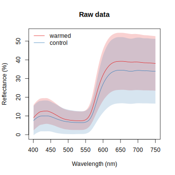
aggplot(flrspec.nm.zero, flrcol$temp, legend= T,main= "Divided by max")aggplot(flrspec.sum.zero, flrcol$temp, legend= T, main="Divided by sum")Phenology and fly eggs
phen.raw %>% count(date, plantid) %>% ggplot(aes(x=date, y=plantid))+ geom_tile() + geom_vline(xintercept=ymd("2021-06-25"))Snowmelt effects
phen %>% drop_na(snow,temp) %>% group_by(snow, temp, julian) %>% summarize_at(c("open","buds"), mean, na.rm=T) %>%
ggplot(aes(x=julian, y=open, shape=snow, linetype=snow, color=temp))+ geom_point() +
geom_path(aes(group=paste(snow, temp))) +
labs(y="Mean total flowers",
x="Day of year", color="Temperature", shape="Snowmelt", linetype="Snowmelt") +
scale_x_continuous(breaks=seq(120,240, by=20))+
scale_color_brewer(palette="Set1", direction=-1) +
scale_linetype_manual(values=c(2,1)) + theme_minimal() +
theme(legend.key.size = unit(2, "lines"))
phen %>% drop_na(snow,temp)%>% group_by(snow, temp, julian) %>% summarize_at("flowering", mean, na.rm=T) %>%
ggplot(aes(x=julian, y=flowering, shape=snow, linetype=snow, color=temp))+ geom_point() +
geom_path(aes(group=paste(snow, temp))) +
labs(y="Proportion flowering",
x="Day of year", color="Temperature", shape="Snowmelt", linetype="Snowmelt") +
scale_x_continuous(breaks=seq(120,240, by=20))+
scale_y_continuous(labels = scales::percent)+
scale_color_brewer(palette="Set1", direction=-1) +
scale_linetype_manual(values=c(2,1)) + theme_minimal() +
theme(legend.key.size = unit(2, "lines"))
phen %>% drop_na(snow,temp)%>% group_by(snow, temp, julian) %>% summarize_at("eggs", mean, na.rm=T) %>%
ggplot(aes(x=julian, y=eggs, shape=snow, linetype=snow, color=temp))+ geom_point() +
geom_path(aes(group=paste(snow, temp))) +
labs(y="Mean total eggs",
x="Day of year", color="Temperature", shape="Snowmelt", linetype="Snowmelt") +
scale_x_continuous(breaks=seq(120,240, by=20))+
scale_color_brewer(palette="Set1", direction=-1) +
scale_linetype_manual(values=c(2,1)) + theme_minimal() +
theme(legend.key.size = unit(2, "lines"))
phen%>% drop_na(snow,temp) %>% group_by(year, snow, temp, julian) %>% summarize_at("has_egg", mean, na.rm=T) %>%
ggplot(aes(x=julian, y=has_egg, shape=snow, linetype=snow, color=temp))+ geom_point() +
geom_path(aes(group=paste(snow, temp))) +
labs(y="Proportion of plants with eggs",
x="Day of year", color="Temperature", shape="Snowmelt", linetype="Snowmelt") +
scale_x_continuous(breaks=seq(120,240, by=20))+
scale_y_continuous(labels = scales::percent)+
scale_color_brewer(palette="Set1", direction=-1) +
scale_linetype_manual(values=c(2,1)) + theme_minimal() +
theme(legend.key.size = unit(2, "lines"))
Temperature effects
ggplot(phen %>% drop_na(height_cm, temp), aes(x=julian, y=height_cm, color=temp))+ geom_point() + geom_path(aes(group=plantid))+
labs(y="Plant height", x="Day of year", color="Temperature") +
scale_x_continuous(breaks=seq(120,240, by=20))+
scale_color_brewer(palette="Set1", direction=-1) +theme_minimal() + geom_vline(xintercept=yday(ymd("2021-06-25")))
phen.raw %>% drop_na(height_cm, temp) %>% group_by(plantid) %>% arrange(plantid, julian) %>% mutate(height_diff = c(NA,diff(height_cm))) %>% ggplot(aes(y=height_diff, x=factor(date), color=temp)) + geom_hline(yintercept=0)+
geom_boxplot(position=position_dodge(0.9), outlier.shape=NA) + geom_point(position=position_jitterdodge(dodge.width=0.9, jitter.width=0.5, jitter.height=0)) +
theme_minimal()
(chomped <- phen.raw %>% filter(str_detect(notes,"herb|munch|chew|broke")) %>%
full_join(phen.raw %>% drop_na(height_cm, temp) %>% group_by(plantid) %>% arrange(plantid, julian) %>%
mutate(height_diff = c(NA,diff(height_cm))) %>% filter(height_diff <= -10)) %>%
select(plantid, temp, date, notes, scribe, height_cm, height_diff) %>% arrange(temp, plantid)) # A tibble: 19 7
plantid temp date notes scribe height_cm height_diff
<fct> <fct> <date> <fct> <fct> <int> <int>
1 1B652 control 2021-07-14 OTC; Very munched KW 6 -20
2 1B947 control 2021-07-02 new on 7/02; chewed DH 34 NA
3 1B947 control 2021-07-14 OTC; herbivorized KW 34 NA
4 1B947 control 2021-07-07 chewed KW 32 NA
5 4B190 control 2021-07-14 Con; Herbivorized KW 28 -11
6 4B203 control 2021-08-03 chewed XL 22 NA
7 4B203 control 2021-07-14 Con; Herbivorized KW 24 -11
8 4B954 control 2021-07-14 Con; Herbivorized KW 41 -10
9 5B7 control 2021-08-03 chewed, height=N/A XL NA NA
10 5D251 control 2021-07-20 Con; munched KW 28 NA
11 1B684 warmed 2021-07-14 OTC; herbivorized KW 43 NA
12 1B684 warmed 2021-07-07 chewed KW 42 NA
13 1C901 warmed 2021-07-20 OTC; top broken at 3 KW NA NA
14 1C901 warmed 2021-08-03 <NA> JB 34 -16
15 3D894 warmed 2021-07-20 OTC; Top broken at 3 KW NA NA
16 5B909 warmed 2021-07-26 chewed XL 31 NA
17 5D277 warmed 2021-08-03 <NA> JB 21 -18
18 6C90 warmed 2021-07-14 chewed <NA> 15 NA
19 6C90 warmed 2021-07-07 chewed KW 16 NAchomped %>% count(temp, plantid) %>% count(temp)# A tibble: 2 2
temp n
<fct> <int>
1 control 7
2 warmed 6phen %>% drop_na(snow,temp) %>% group_by(temp, julian) %>% drop_na(open, buds) %>%
summarize(openbuds.se = sd(open+buds)/sqrt(length(open+buds)), openbuds=mean(open+buds)) %>%
ggplot(aes(x=julian, y=openbuds, color=temp))+ geom_point() +
geom_path(aes(group=temp)) + geom_linerange(aes(ymin=openbuds-openbuds.se, ymax=openbuds+openbuds.se))+
labs(y="Mean total open flowers + elongated buds",
x="Day of year", color="Temperature") +
scale_x_continuous(breaks=seq(120,240, by=20))+
scale_color_brewer(palette="Set1", direction=-1) + theme_minimal()+ geom_vline(xintercept=yday(ymd("2021-06-25")))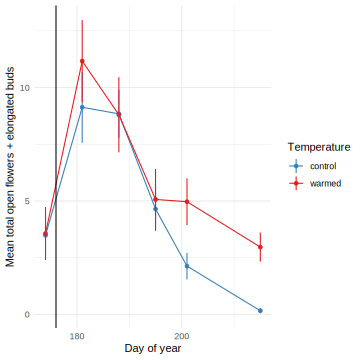
lmer(I(open+buds) ~ factor(date) * temp + (1|plantid), data=filter(phen.raw, date!="2021-06-23")) %>% anova %>% kable(caption="mean open and buds")| Sum Sq | Mean Sq | NumDF | DenDF | F value | Pr(>F) | |
|---|---|---|---|---|---|---|
| factor(date) | 2748.08056 | 458.013427 | 6 | 201.44268 | 14.8305003 | 0.0000000 |
| temp | 37.96198 | 37.961981 | 1 | 75.67022 | 1.2292111 | 0.2710719 |
| factor(date):temp | 50.65027 | 8.441711 | 6 | 201.44268 | 0.2733431 | 0.9489477 |
phen %>% drop_na(temp)%>% group_by(temp, julian) %>% summarize_at("flowering", mean, na.rm=T) %>%
ggplot(aes(x=julian, y=flowering, color=temp))+ geom_point() +
geom_path(aes(group=temp)) +
labs(y="Proportion flowering",
x="Day of year", color="Temperature") +
scale_x_continuous(breaks=seq(120,240, by=20))+
scale_y_continuous(labels = scales::percent)+
scale_color_brewer(palette="Set1", direction=-1) + theme_minimal()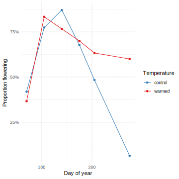
phen %>% drop_na(temp) %>% group_by(temp, julian) %>% drop_na(eggs) %>%
summarize(eggs.se = sd(eggs)/sqrt(length(eggs)), eggs=mean(eggs)) %>%
ggplot(aes(x=julian, y=eggs, color=temp))+ geom_point() +
geom_path(aes(group=temp)) + geom_linerange(aes(ymin=eggs-eggs.se, ymax=eggs+eggs.se))+
labs(y="Mean total eggs",
x="Day of year", color="Temperature") +
scale_x_continuous(breaks=seq(120,240, by=20))+
scale_color_brewer(palette="Set1", direction=-1) + theme_minimal() + geom_vline(xintercept=yday(ymd("2021-06-25")))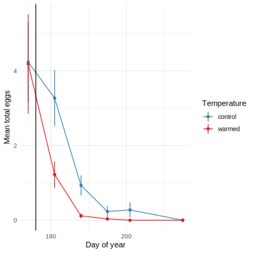
lmer(eggs ~ factor(date) * temp + (1|plantid), data=filter(phen.raw, date!="2021-06-23")) %>% anova %>% kable(caption="mean eggs")| Sum Sq | Mean Sq | NumDF | DenDF | F value | Pr(>F) | |
|---|---|---|---|---|---|---|
| factor(date) | 186.95499 | 31.159165 | 6 | 205.83789 | 16.139282 | 0.0000000 |
| temp | 15.06743 | 15.067433 | 1 | 77.15736 | 7.804367 | 0.0065705 |
| factor(date):temp | 43.22882 | 7.204803 | 6 | 205.83789 | 3.731818 | 0.0015168 |
phen %>% drop_na(temp) %>% group_by(temp, julian) %>% drop_na(eggs_per_flower) %>%
summarize(eggs_per_flower.se = sd(eggs_per_flower)/sqrt(length(eggs_per_flower)), eggs_per_flower=mean(eggs_per_flower)) %>%
ggplot(aes(x=julian, y=eggs_per_flower, color=temp))+ geom_point() +
geom_path(aes(group=temp)) + geom_linerange(aes(ymin=eggs_per_flower-eggs_per_flower.se, ymax=eggs_per_flower+eggs_per_flower.se))+
labs(y="Eggs per flower",
x="Day of year", color="Temperature") +
scale_x_continuous(breaks=seq(120,240, by=20))+
scale_color_brewer(palette="Set1", direction=-1) + theme_minimal() + geom_vline(xintercept=yday(ymd("2021-06-25")))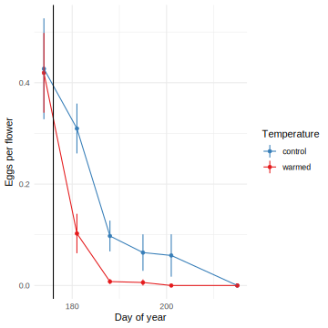
lmer(eggs_per_flower ~ factor(date) * temp + (1|plantid), data=filter(phen.raw, date!="2021-06-23")) %>% anova %>% kable(caption="eggs per flower")| Sum Sq | Mean Sq | NumDF | DenDF | F value | Pr(>F) | |
|---|---|---|---|---|---|---|
| factor(date) | 1.0951582 | 0.1825264 | 6 | 146.26779 | 13.685155 | 0.0000000 |
| temp | 0.0711076 | 0.0711076 | 1 | 87.42029 | 5.331387 | 0.0233031 |
| factor(date):temp | 0.2621148 | 0.0436858 | 6 | 146.26779 | 3.275400 | 0.0047243 |
phen.raw %>% drop_na(temp) %>% group_by(temp, date) %>% summarize(eggs_per_flower=mean(eggs_per_flower, na.rm=T)) %>%
pivot_wider(names_from="temp", values_from="eggs_per_flower") %>% kable(digits=3)| date | control | warmed |
|---|---|---|
| 2021-06-23 | 0.427 | 0.419 |
| 2021-06-30 | 0.346 | 0.098 |
| 2021-07-02 | 0.222 | 0.139 |
| 2021-07-07 | 0.098 | 0.008 |
| 2021-07-14 | 0.065 | 0.006 |
| 2021-07-20 | 0.048 | 0.000 |
| 2021-07-26 | 0.069 | 0.000 |
| 2021-08-03 | 0.000 | 0.000 |
phen %>% drop_na(temp) %>% group_by(year, temp, julian) %>% summarize_at("has_egg", mean, na.rm=T) %>%
ggplot(aes(x=julian, y=has_egg, color=temp))+ geom_point() +
geom_path(aes(group=temp)) +
labs(y="Proportion of plants with eggs",
x="Day of year", color="Temperature") +
scale_x_continuous(breaks=seq(120,240, by=20))+
scale_y_continuous(labels = scales::percent)+
scale_color_brewer(palette="Set1", direction=-1) + theme_minimal() + geom_vline(xintercept=yday(ymd("2021-06-25")))bind_rows(
buds=phen %>% drop_na(snow,temp) %>% group_by(temp, julian) %>% drop_na(open, buds) %>%
summarize(response.se = sd(open+buds)/sqrt(length(open+buds)), response=mean(open+buds)),
eggs_per_flower = phen %>% drop_na(temp) %>% group_by(temp, julian) %>% drop_na(eggs_per_flower) %>%
summarize(response.se = sd(eggs_per_flower)/sqrt(length(eggs_per_flower)), response=mean(eggs_per_flower)), .id = "variable") %>%
ggplot(aes(x=julian, y=response, color=temp))+ geom_point() +
geom_path(aes(group=temp)) + geom_linerange(aes(ymin=response-response.se, ymax=response+response.se))+
facet_wrap(vars(variable), scales="free_y", nrow=2,
labeller=as_labeller(c(buds="(A) Total open flowers + elongated buds", eggs_per_flower="(B) Eggs per flower")))+
labs(x="Day of year", color="Temperature") +
scale_y_continuous(limits=c(0,NA), expand=expansion(mult=c(0,0.05)))+
scale_x_continuous(breaks=seq(120,240, by=10))+ geom_vline(xintercept=yday(ymd("2021-06-25")), linetype=2)+
scale_color_brewer(palette="Set1", direction=-1) + theme_bw()+
theme(legend.position = "top", axis.title.y=element_blank(), axis.text=element_text(color="black"))Selection
Seed production
all.mean %>% select(all_of(c(floraltraits, "seeds_per_flower","temp"))) %>%
pivot_longer(any_of(floraltraits), names_to="trait") %>%
ggplot(aes(x=value, y=seeds_per_flower, color=temp)) +
geom_smooth(method="lm",se=F) + # formula = y ~ poly(x, 2, raw=TRUE)
geom_point() +
facet_wrap(vars(trait), scales="free_x", labeller=as_labeller(traitnames.units)) +
labs(x="Trait", y=traitnames["seeds_per_flower"], color="Temperature")+
theme_bw() + scale_color_brewer(palette="Set1", direction=-1) + theme(legend.position = "top")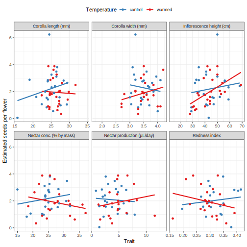
#get the the standardized selection differential S' (change in relative fitness / standardized trait value)
mt.mod.seeds <- map(set_names(floraltraits),
~ lm(seeds_rel ~ trait.z *temp,
data=all.mean %>% as.data.frame() %>% mutate(trait.z = all.mean[[.x]] / traits.sd[[.x]]) %>%
group_by(temp) %>% mutate(seeds_rel = seeds_per_flower/mean(seeds_per_flower, na.rm=T)))) # mean seeds in each temp
mt.mod.seeds.coefs <- map_dfr(mt.mod.seeds, tidy, .id="trait")
mt.mod.seeds.tests <- map(mt.mod.seeds, car::Anova, type=3) %>% map_dfr(tidy, .id="trait")
mt.mod.seeds.emm <- map_dfr(mt.mod.seeds, ~summary(emtrends(.x, ~temp, var="trait.z")), .id="trait")
mt.mod.seeds.tests %>% filter(!term %in% c("(Intercept)","Residuals")) %>% select(-sumsq, -df, -statistic) %>%
pivot_wider(names_from="term", values_from="p.value") %>%
kable(caption="Seeds selection vs. temperature", digits=3)| trait | trait.z | temp | trait.z:temp |
|---|---|---|---|
| corolla_length | 0.254 | 0.438 | 0.422 |
| corolla_width | 0.566 | 0.237 | 0.253 |
| nectar_volume | 0.779 | 0.489 | 0.431 |
| nectar_conc | 0.455 | 0.207 | 0.199 |
| height_cm | 0.427 | 0.196 | 0.178 |
| redness | 0.590 | 0.225 | 0.236 |
ggplot(mt.mod.seeds.emm, aes(x=trait, color=temp, y=trait.z.trend, ymin=trait.z.trend-SE, ymax=trait.z.trend+SE)) +
geom_hline(yintercept=0)+ geom_pointrange(position=position_dodge(width=0.3)) +
theme_bw() + scale_color_brewer(palette="Set1", direction=-1) + theme(legend.position = "top") +
labs(x="", y="Standardized selection differential, seeds per flower", color="Temperature") +
scale_x_discrete(labels=traitnames)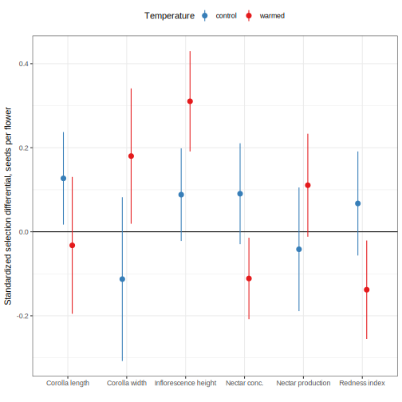
Fly damage
all.mean %>% select(all_of(c(floraltraits, "prop_infested","temp"))) %>%
pivot_longer(any_of(floraltraits), names_to="trait") %>%
ggplot(aes(x=value, y=prop_infested, color=temp)) + geom_point() +
geom_smooth(method="glm",se=F, method.args = list(family="binomial")) +
facet_wrap(vars(trait), scales="free_x", labeller=as_labeller(traitnames.units)) +
labs(x="Trait", y=traitnames["prop_infested"], color="Temperature")+
theme_bw() + scale_color_brewer(palette="Set1", direction=-1) + theme(legend.position = "top")
mt.mod.infested <- map(set_names(floraltraits),
~ lm(infested_rel ~ trait.z * temp,
data=all.mean %>% as.data.frame() %>% mutate(trait.z = all.mean[[.x]] / traits.sd[[.x]]) %>%
group_by(temp) %>% mutate(infested_rel = prop_infested/mean(prop_infested, na.rm=T)))) # mean infested in each temp
mt.mod.infested.coefs <- map_dfr(mt.mod.infested, tidy, .id="trait")
mt.mod.infested.tests <- map(mt.mod.infested, car::Anova, type=3) %>% map_dfr(tidy, .id="trait")
mt.mod.infested.emm <- map_dfr(mt.mod.infested, ~summary(emtrends(.x, ~temp, var="trait.z")), .id="trait")
mt.mod.infested.tests %>% filter(!term %in% c("(Intercept)","Residuals")) %>% select(-sumsq, -df, -statistic) %>%
pivot_wider(names_from="term", values_from="p.value") %>% kable(caption="Fly selection vs. temperature", digits=3)| trait | trait.z | temp | trait.z:temp |
|---|---|---|---|
| corolla_length | 0.534 | 0.945 | 0.943 |
| corolla_width | 0.381 | 0.603 | 0.564 |
| nectar_volume | 0.807 | 0.839 | 0.980 |
| nectar_conc | 0.930 | 0.266 | 0.227 |
| height_cm | 0.641 | 0.376 | 0.397 |
| redness | 0.611 | 0.805 | 0.845 |
ggplot(mt.mod.infested.emm, aes(x=trait, color=temp, y=trait.z.trend, ymin=trait.z.trend-SE, ymax=trait.z.trend+SE)) +
geom_hline(yintercept=0)+ geom_pointrange(position=position_dodge(width=0.3)) +
theme_bw() + scale_color_brewer(palette="Set1", direction=-1) + theme(legend.position = "top") +
labs(x="", y="Standardized selection differential, proportion infested", color="Temperature") +
scale_x_discrete(labels=traitnames)